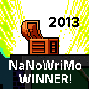
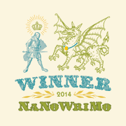

Home
About Me
Résumé
Features
Home
About Me
Résumé
Features

I'm Ellen Ni, a current student at the University of Illinois at Urbana-Champaign, majoring in computer science. This summer I'm interning at Broadview Communications.
I am a writer, reader, artist, programmer. I've written a few books (with the help of NaNoWriMo - National Novel Writing Month). My favorite number is 12.
 
My current writing projects are a rewrite of my Nano13 book and preparation for Nano16. My current programming projects are this website and Starflakes, a choose your own adventure game.
The second part of the password is E